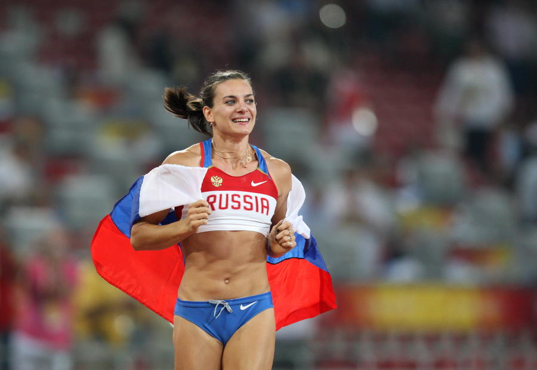
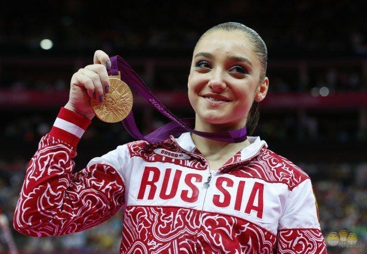
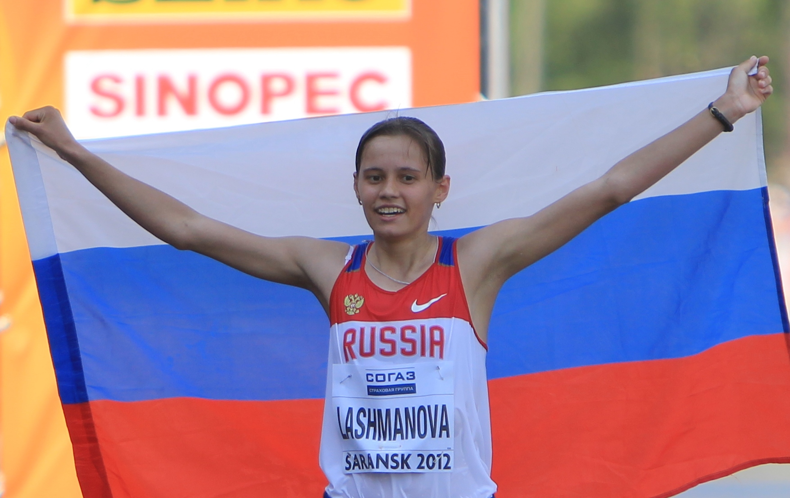
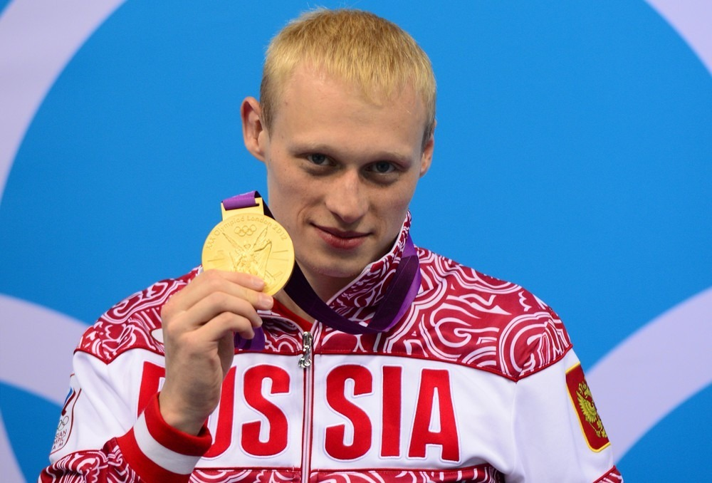
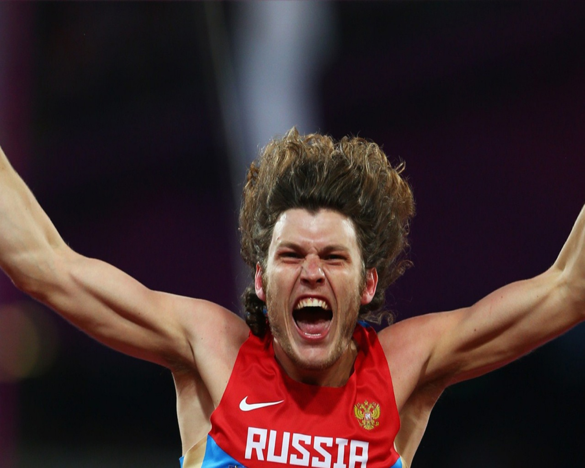
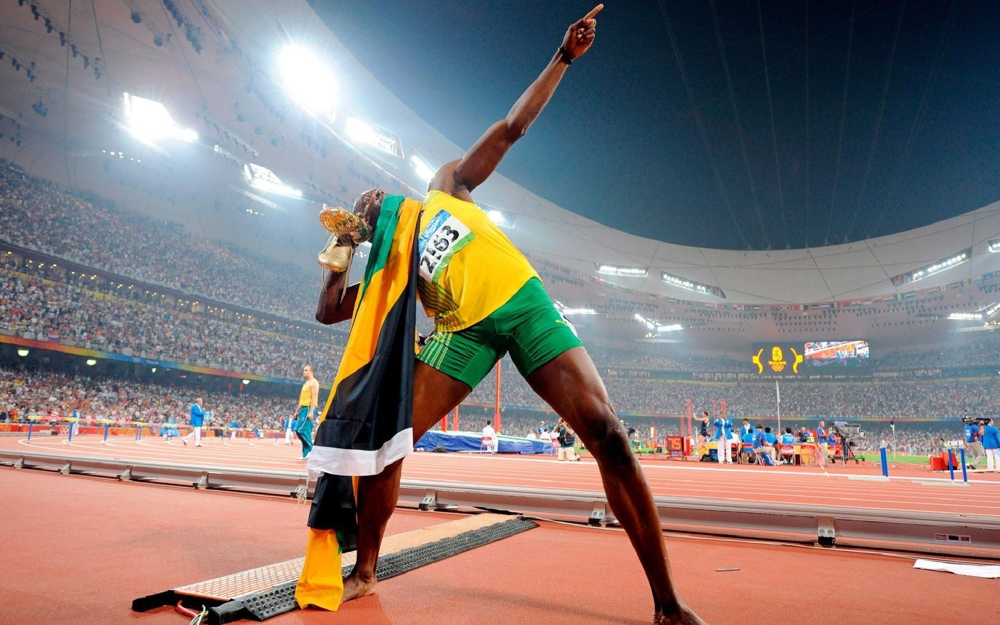
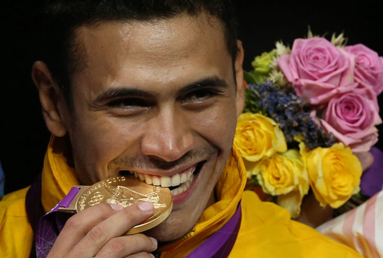
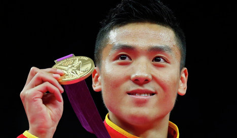
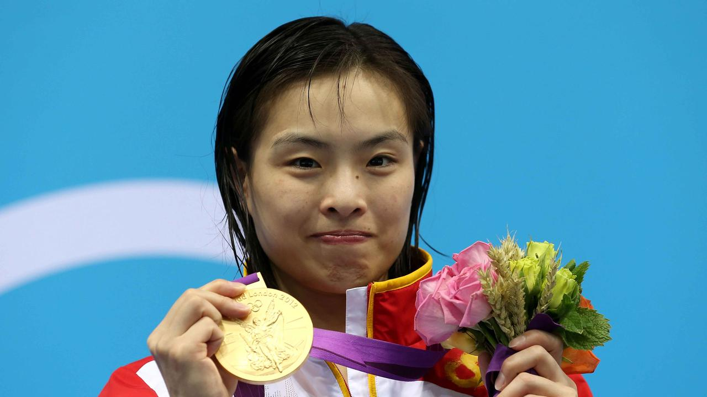

A little about the medalists
Ours
Isinbaeva Elena - Russian pole vaulter. Two-time Olympic champion (2004, 2008), bronze medal winner 2012 Olympic games. Three-time world champion in the open air and 4-fold world indoor champion, European indoor and outdoor champion. She holds 28 world records in pole vaulting among women. Honored master sport of Russia.
July 22, 2005 at the competition in London for the first time in the history of women's jumping vault took the height of five meters. 6 Mar 2012 is recognized as the most successful current athlete of Russia.
Aliya Mustafina is a Russian gymnast. 2012 Olympic champion in the uneven bars, silver and two-time bronze medalist Olympics 2012. Three-time world champion, three-time European champion, multiple winner world and European Championships. Athlete of the year 2012 in Russia. The winner of the prize "the Silver DOE". Honored master of sports of Russia.
Elena Lashmanova - Russian athlete, specializes in sports walking. Olympic champion, world champion 2013, winner Russian Championships, world champion and European Junior champion. The owner of the world of record on a distance of 20 km (1:25.02).
Ilya Zakharov is a Russian water jumper. 2012 Olympic champion in jumping from a 3-meter springboard and Vice-champion of the Olympic games 2012 in the men's synchronised 3-metre springboard (with Evgeny Kuznetsov), three-time Vice-world champion in individual and synchronous jumps from a 3-meter springboard, four-time European champion.
Ivan Ukhov - Russian high jumper, 2012 Olympic champion, 2010 world indoor champion and two-time European indoor champion 2009 and 2011, Russian indoor record holder (2.42 m).
Not Ours
Usain Bolt - Jamaican athlete, who specializes in sprint six-time Olympic champion and eight-time world champion. During the speeches set 8 world records. The current holder of world records in the run for 100 (9.58 seconds; Berlin, 2009) and 200 meters (19.19 seconds; Berlin, 2009), as well as in the relay 4? 100 meters in the national team Jamaica (36.84 seconds, London, 2012).
He is the first person in the history of athletics who set world records for three of these distances at one Olympiad (Beijing 2008), as well as the first person winners in two consecutive Olympiads (Beijing 2008 and London 2012) at a distance of 100 and 200 meters. Winner of the largest number of Olympic gold awards in the history of Jamaica. Currently ranked 4th in terms of the number of gold medals won at the Olympic among athletes, second only to Paavo Nurmi, Karl Lewis and Ray Uri.
Ruben Limardo - Venezuelan fencer with swords, champion of the 2012 Summer Olympics in London in the individual event. One of two Olympic champions in the history of Venezuela. Champion of the Pan American Games 2007, three times the silver medalist of the Pan American games of 2007 and 2011. He studies and trains in Gliwice, Poland. In 2006 and 2008 he was the champion of Poland on fencing.
Dun Dun - Chinese trampoline jumper, Olympic champion and world champion.
Dong Dun was born in 1989 in Zhengzhou, Henan Province. From 5 years old he took up gymnastics, in 2002 he switched to jumping on a trampoline. In 2005 entered the national team. In 2007, Dun Dun won the gold medal of the world championship in the team and the silver medal in the individual competition. At the 2008 Olympics, he won the bronze medal. At the 2009 World Championships, he won gold medals in the individual and team championships, at the 2010 World Championships - in individual and synchronized jumps, and at the 2011 World Championships he won medals in all three categories. In 2010, Dun Dun became the champion of the Asian Games, and in 2012 - the Olympic Games.
Serena Williams - American tennis player, younger sister Venus Williams.
- The only one of tennis players (both women and men), who resigned to career Gold helmet in both singles and doubles.
- Winner of 32 Grand Slam tournaments (17 is singles, 13 is doubles, 2 - mixed doubles).
- Takes sixth place in the history of women's tennis and 4th place for the "Open Era" by number of wins in Grand Slam tournaments in singles after Steffi Graf (22), Chris Evert (18) and Martina Navratilova (18).
- It was the first racket of the world both in single and in doubles ratings.
- Four-time Olympic champion.
- Four-time winner of the final WTA Championship.
- The oldest tennis player, who ranked the ranking in the women's singles.
- Record holder of a women's professional tour of the amount of prize money earned.
Wu Minsa is the famous Chinese jumper in the water, 4-time Olympic champion, 7-time world champion (including 6-time world champion in synchronized diving from a 3-meter springboard) and a three-time Asian Games champion. Specializes in jumping from the 1-meter and 3 meter springboards. One of the most titled athletes in the history of diving.

Morozov I.S. EVT-16bzu